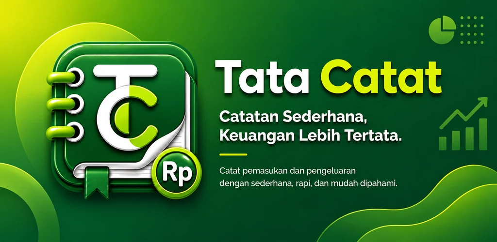
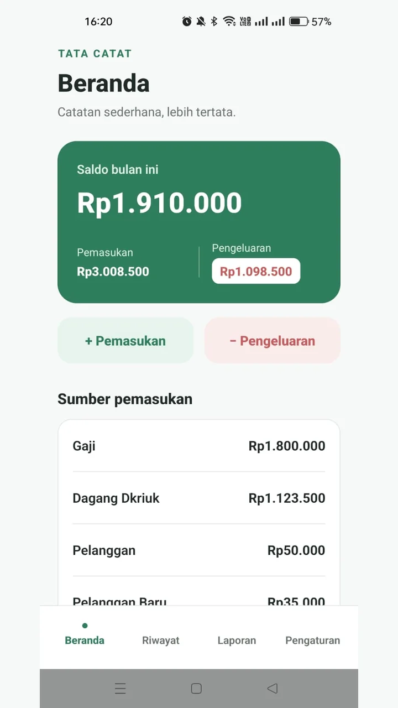
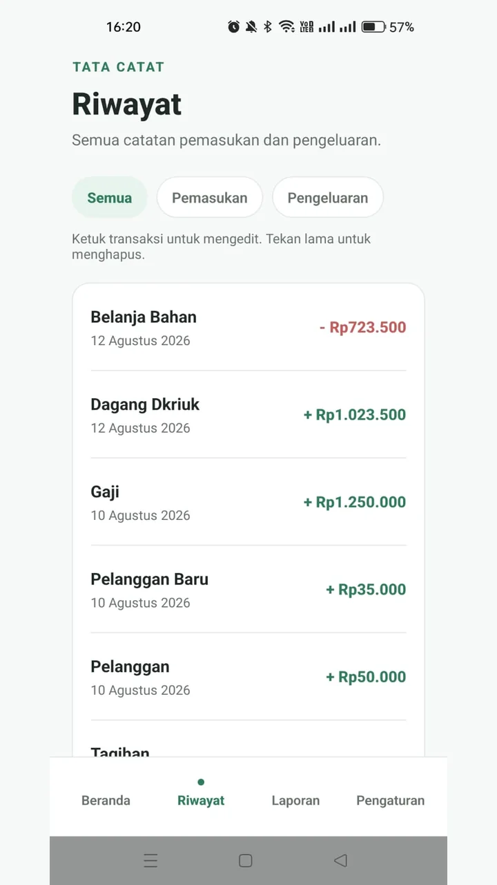
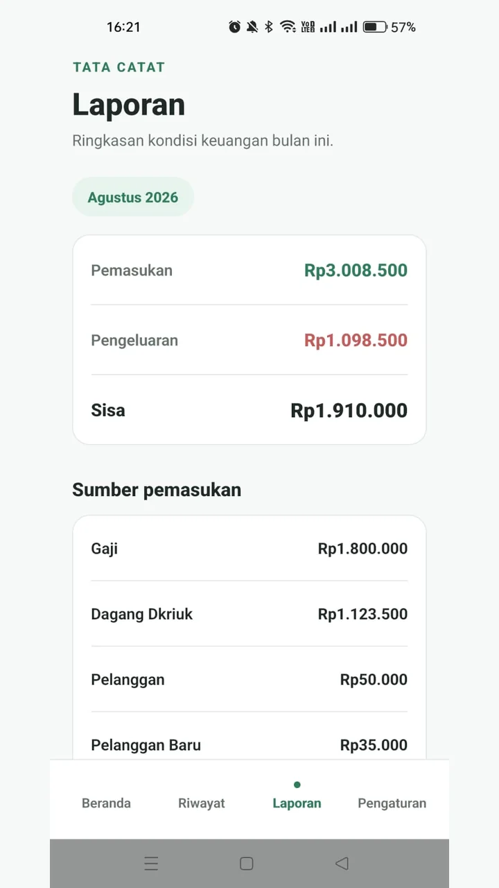
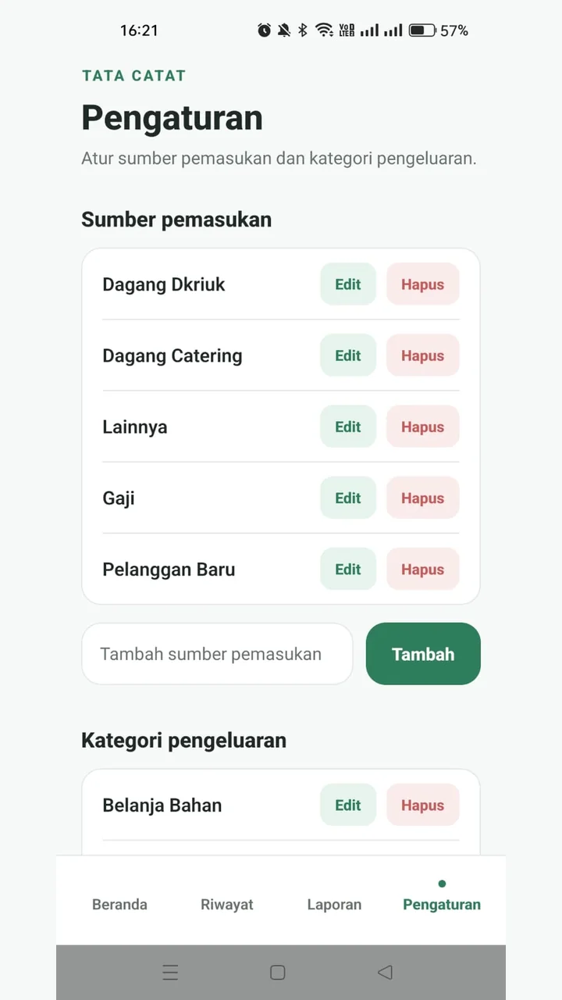
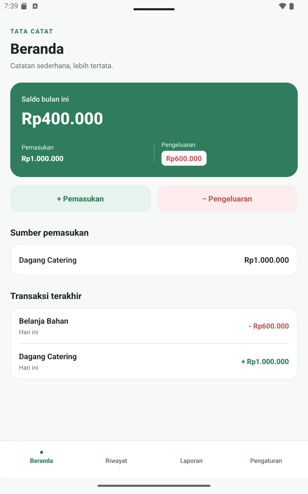
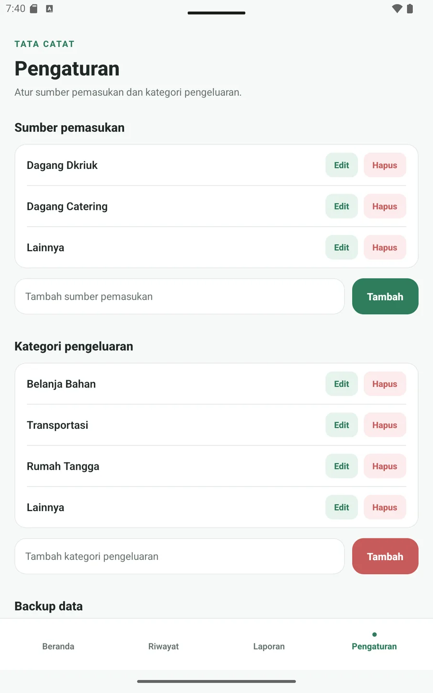
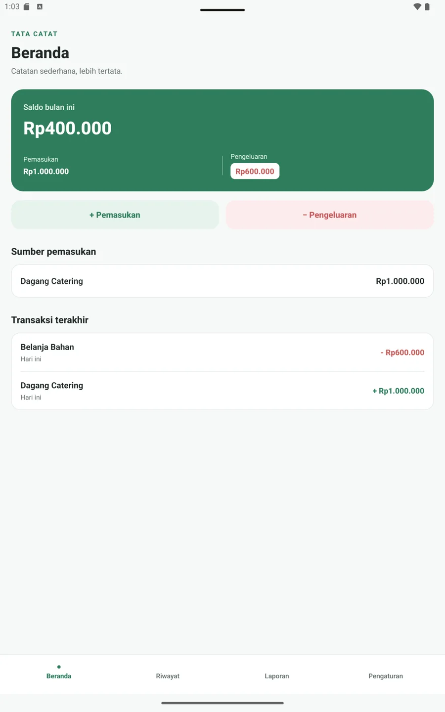
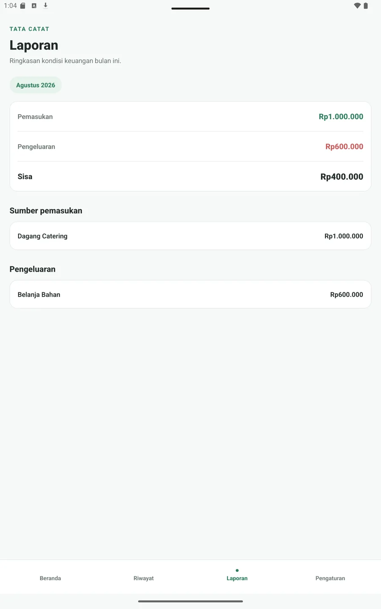
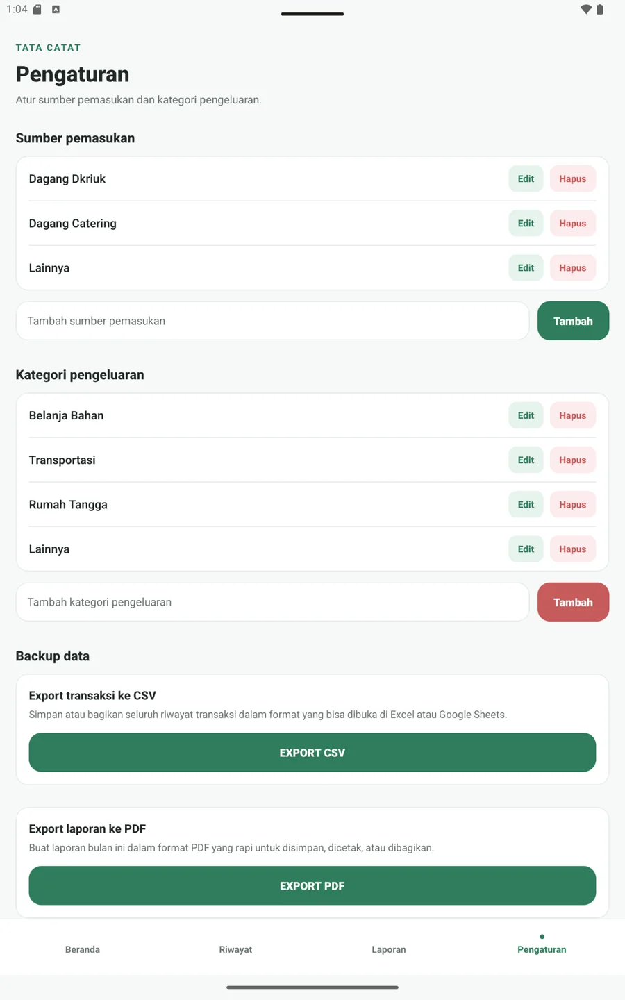

Untuk Android
Saat ini pengembangan difokuskan untuk smartphone Android. Belum tersedia untuk iPhone/iOS.
Saya sedang menyiapkan Tata Catat untuk dirilis di Google Play. Bantuan teman dan kerabat pengguna Android sangat berarti untuk melewati tahap Closed Testing.
Khusus Android • Smartphone & tablet • Fungsi pencatatan utama dapat digunakan offline

Tata Catat membantu mencatat pemasukan dan pengeluaran sehari-hari tanpa membuat pengguna berhadapan dengan fitur keuangan yang rumit.
Saat ini pengembangan difokuskan untuk smartphone Android. Belum tersedia untuk iPhone/iOS.
Setelah terpasang, fungsi pencatatan utama dapat digunakan tanpa koneksi internet.
Tampilan sudah diuji pada smartphone, tablet 7-inch, dan tablet sekitar 10-inch.
Transaksi dapat diekspor ke CSV dan laporan dapat dibuat ke PDF dari aplikasi.
Tester membutuhkan internet untuk membuka link Closed Testing, bergabung sebagai tester, mengunduh aplikasi dari Google Play, serta menerima pembaruan. Setelah aplikasi terpasang, pencatatan utama Tata Catat dapat digunakan secara offline.
Berikut tampilan nyata aplikasi pada perangkat Android. Tidak perlu memasukkan data keuangan asli saat testing—tester boleh menggunakan data contoh.









Tidak diperlukan kemampuan teknis. Yang terpenting adalah menggunakan perangkat Android, memiliki akun Google, dan bersedia tetap bergabung selama periode testing.
Gunakan alamat Gmail/Google Account yang aktif dan digunakan di Google Play pada perangkat Android Anda.
Kirim alamat Gmail kepada saya lewat chat pribadi. Jangan menuliskannya di grup atau ruang publik.
Alamat Gmail akan dimasukkan ke daftar Closed Testing Tata Catat di Google Play Console.
Setelah release testing siap, saya akan mengirim link opt-in resmi dari Google Play.
Install Tata Catat, lalu coba pencatatan pemasukan, pengeluaran, riwayat, laporan, dan pengaturan.
Mohon jangan keluar dari program testing selama setidaknya 14 hari. Jika menemukan kendala, sampaikan kepada saya.
Belum. Tata Catat saat ini baru dikembangkan dan diuji untuk Android.
Ya. Tata Catat sudah diuji pada tablet Android 7-inch dan sekitar 10-inch, selain smartphone Android.
Tidak untuk fungsi pencatatan utama setelah aplikasi terpasang. Internet tetap diperlukan untuk mengunduh aplikasi dari Google Play, proses bergabung Closed Testing, dan pembaruan aplikasi.
Tidak. Untuk testing, gunakan saja data contoh agar lebih nyaman dan menjaga privasi.
Jika aplikasi menutup sendiri, tombol tidak bekerja, tampilan bermasalah, atau ada bagian yang membingungkan, cukup kirim pesan singkat atau screenshot kepada saya.
Balas pesan WhatsApp/DM yang membawa Anda ke halaman ini dan kirim alamat Gmail yang digunakan di Google Play secara pribadi.